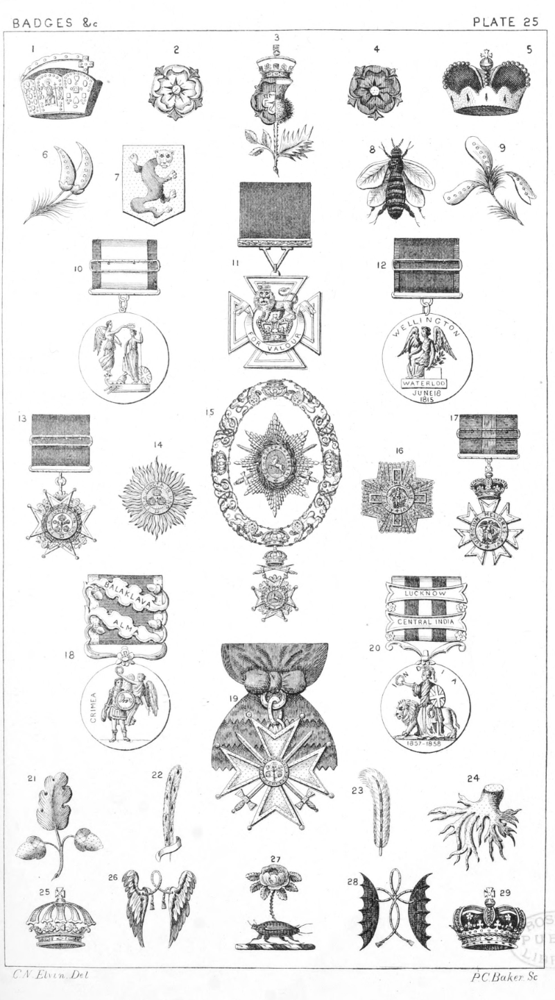

Plate 25.

Plate 25
- Crown of Charlemagne, was borne
by five Kings of England as Arch-
treasures of the Holy Roman
Empire. See p. 31. f. 9, and 10
- A White Rose the Badge of the
House of York
- The Rose and Thistle conjoined.
Badge of James I.
- A Red Rose the Badge of the House
of Lancaster
- Crown of the Elector of the Holy
Roman Empire
- Planta genista. Badge of the Plantagenets
- Badge of Staunton
- Badge of Napoleon
- Badge of Plantagenet also represented as No. 6
- Gold Medal and Ribbon for Trafalgar
- Victoria Cross. "Red ribbon if
worn by a soldier, and by a blue
ribbon if worn by a sailor "
- Medal and Ribbon for Waterloo
- Badge and Ribbon, Companion of
the Bath. C.B.
- Star of the Military Knights Grand
Cross of the Bath. G.C.B.
- Collar, Badge and Star of the Royal
Hanoverian Guelphic Order.
G.C.H.
- Star, Knights Commanders of the
Order of St. Michael, and St.
George. K.C.M.G.
- Badge and Ribbon — Companion of
St. Michael, and St. George.
C.M.G.
- Badge and Ribbon for the
Crimea, with Clasp for Alma and
Balaklava, the same medal and
ribbon is also given with Clasps
or small Bars, for Inkerman, and
Sebastopol
- The Badge of the Order of the
Dooranee Empire
- Medal or Badge for India, Clasps
for Central India and Lucknow ;
the same medal and ribbon is also
borne with Clasps for Relief of
Lucknow, Defence of Lucknow,
and Delhi
- Badge of Ogle
- Badge an ostrich feather erm. quilled
or. John of Gaunt
- Badge of John Beaufort Duke of
Somerset. Ostrich feather white,
the pen compony ar. and az.
- Badge of John Duke of Bedford,
brother to Henry V. A golden
root
- Hanoverian Crown
- Badge of Meux. Two wings inverted
and endorsed ar. conjoined by a
cord with tassels or.
- A Damask Rose with leaves and
thorns, at the bottom of the stalk
a beetle all ppr. Crest of Thorndike
- Badge of Daubeney. Two bats
wings endorsed sa. tied by a cord
tasselled or.
- Crown of Scotland